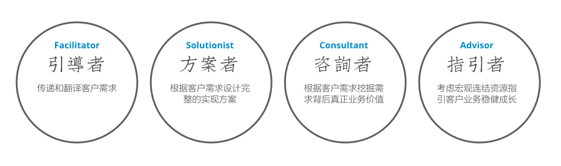

ThoughtWorks业务分析师(Business Analyst)的可爱之处在于，这样的一个职位既可以安于现状地成为随项目逐流的普通成员，也可以不知不觉成为决定项目成败地关键。更加具有技术性的是，不同种类的BA决定其在团队中的影响力。

引导者Facilitator
第一类也是最被大众广为流传的，引导者（Facilitator）。这是一个具有强迫症气质的描述，回想一下你是否有热衷于将书架上的书按照高矮顺序排列的爱好。
一个典型的引导者写得一手好的会议记录，并懂得把客户的需求直白地记录在任何电子或纸质媒体，印象中他们一定会在邮件的最后中规中矩地写下Any questions let me know和斜体Regards，尽管大多时候，客户不会专注到注意此类邮件内容。
当然你要有足够的英文和讲演的能力，要善解人意到插科打诨保证与Geek们沟通无障，当然此处沟通只在于通，沟还谈不上，结果是你说的话客户或者开发团队点头即可。如果你是传统意义上的好学生，热衷于记笔记和物归其位，最好保证同声传译而尽量没有主张，你足够能力做一位可爱的“引导者”BA。
方案者Solutionist
除了语言和记笔记的优势以外如果你还有若干技术背景或者用户交互领域知识，你可以考虑成为第二类BA，方案者（Solutionist）。这是一个具有Nerd气质的描述，回想一下你是否喜欢参与答题类网站并赚取积分的嗜好，或者说提出解决方案会让你血脉喷张。
一个典型的方案者会第一时间对客户的需求做出回应，每次会议都会有意识被选择喷吐解决方案的最佳地点，面向纯真的客户展示精美的手绘线框图，需求被第一时间搭载解决方案展现在客户面前。
当然请你保证你的设计至少到“Normal”这个级别，或者你要有足够强大的心理成熟度以说服所有人你的设计不会导致你的开发团队揭竿而起，最坏的情况，花十倍的时间来解决一个你曾经不经意抖落的华丽圆角问题，不是没有发生过。如果你有足够的跟客户面对面交流能力，热衷于解决问题，并拥有优秀的交互设计能力，你足够能力做一位可爱的“方案者”BA。
咨询者Consultant
如果你足够幸运拥有强大的咨询技能和优秀的商业敏感度，你可以考虑成为第三类BA，咨询者（Consultant）。这是一个充满人格魅力和影响力的描述，虽然在TW人人都被简单地归于Consultant，但其本身所赋予内涵远远大于现阶段TW Consultant或者说整个咨询行业平均水平。
一个典型的“咨询者”永远会把解决方案放在最后（不像“方案者”执着于解决方案的设计），永远不会正面回应客户的直接需求，而是努力发掘需求背后真正的价值，并毫不吝啬地把这个价值专递到客户和开发团队的所有人。
他们擅长的永远不是回答问题，而是提出问题，并永远不会对其问题的答案感到意外；他们都有些偏执，偏执于所做的一切活动都必须基于严格的投入产出比思考，并努力使用目标驱动和成功量化的方法论，以保证超高的效率和杜绝浪费。
他们会敏锐地发现客户之间的依赖关系，远离政治因素，在客户间左右逢源八面玲珑；他们会努力平衡好对客户和对团队的爱，努力成为团队的吉祥物被所有人所热爱和信任。如果你相信人格完美，对成为大众情人这种事情乐此不疲，喜欢研究商业模式的成功和失败，在硬技能方面拥有以上两种BA所具备的能力，你足够能力做一位可爱的“咨询者” BA。
指引者Advisor
如果你有足够的野心，BA提供你一条可以成为如同Peter Drucker咨询之神的道路，我们叫它指引者（Advisor）。这是一个太高屋建瓴的描述，大抵上这会是一个在某种意义上毁掉你项目的人。
他们的关注点早已经不在某个项目本身，如果项目只是一盘棋局的某一步，他们的关注点在于这盘棋为什么要下的问题；他们可以对领域内知识“无知”，他们的作用正是利用“无知”的优势引导客户选择正确的商业发展方向，审视和谋划策略；他们会与整个组织形影不离，在细节中体味企业巨大机体中不同的味道；他们会敏感于市场些微的变化，在不同事件交错中发现商机，量化风险；他们善于筹划，善于描绘蓝图，是整个商业模式的引导者和观察者。
或许对于BA而言，这样的目标过于遥远，但是BA的可爱之处就在于此——你完全可以有这么一天告诉你的客户把钱花在TW身上是一种浪费。
写在最后
这是一篇2010年的旧文，但当我在五年后重新编辑之后发现这样的思路一直引导着我成长：从需求的传递者、设计者、咨询者、最后变成业务发展的引导者，我就是五年来推动我努力成长的路。原文标题叫做《可爱的BA》，到现在它依然是个个无限可能的职业，这也是为什么我称它为非常可爱的原因。